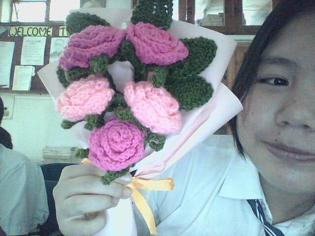

Physics
Physics is about forces and balance. Our turtle and lotuses must be light and balanced so they stay in place on the pond, and the wire frames must carry their weight.

From a ball of yarn to a living wetland
Our project, "Representing Nature by Crochet", is a wetland scene made almost entirely of yarn. Crochet lotuses, leaves, a turtle and a catfish sit on a base board. Hidden magnets, small robotic parts and LED lights bring the scene to life.
We chose a wetland with lotuses, a turtle and a catfish, then sketched how everything would fit.

We practised new stitches and patterns so every petal, leaf and creature would look right.

Chain by chain, we crocheted all the plants and animals in different designs and colours.

We crocheted two girls in traditional dress and a banner that shows our project and culture.

We prepared the base board and arranged the crochet pieces into a peaceful pond.

We hid magnets in the scene so that parts of it attract, move or hold together without being touched.

Small motors and robotic parts were fitted inside so that parts of the wetland can move.

LED lights were placed among the lotuses and leaves to make the wetland glow.

We put every part together, tested the magnets, motors and lights, and fixed any problems.

Physics is about forces and balance. Our turtle and lotuses must be light and balanced so they stay in place on the pond, and the wire frames must carry their weight.
Magnets pull on each other without touching. Hidden magnets under the board and inside the crochet pieces let parts attract, hold on or move like magic.
A small motor turns electric power into movement, so parts of the wetland can move. LEDs turn electricity into light and make the pond glow.
Every chain takes time. We shared the work, set small daily goals and cheered each other on, so the huge task felt lighter.
We argued about colours, designs and plans. We learned to listen, take turns and pick the best idea together, and crochet itself helped us make up.
We gave up much of our rest to finish. We split the work fairly, helped each other and kept our eyes on the finished wetland.
Yarn is soft and wires are not. We tested small parts first, hid the wires inside the stuffing and frame, and worked with our teachers to fix problems.



Participant and Co-creator
Loves turning small stitches into big dreams.

Participant and Co-creator
Brings patience, culture and colour to every design.
We thank our teachers for their guidance, our seniors for their advice and our friends for their help and laughter. Without your patience and support, this wetland of yarn would still be a dream. Thank you for believing in us.